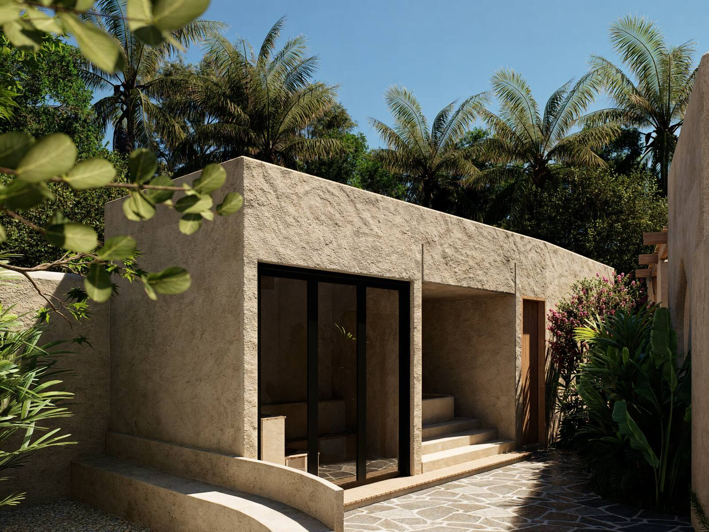
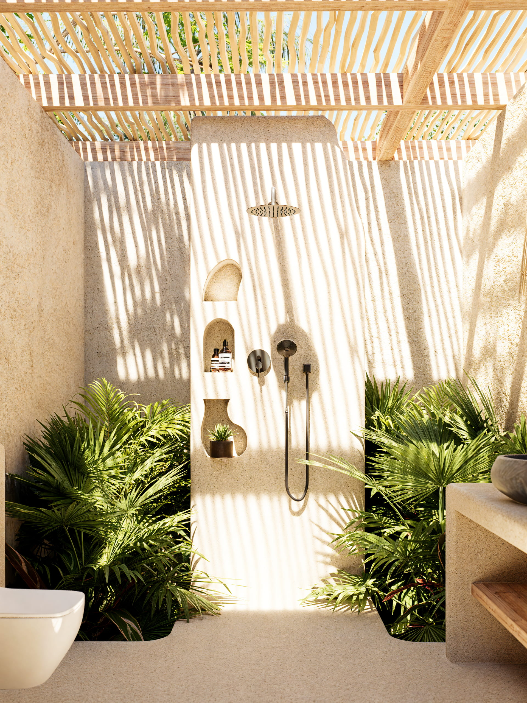

Casa Brava Boutique Hotel
El origen
Un complejo de lujo ubicado en el sur de Lombok
Kuta Mandalika - Lombok
Casabrava.com - @casabrava.lombok
Pensadas para la intimidad. Trazadas para el silencio.
Solo ocho villas privadas, cada una con su propio horizonte. Muros de piedra curva, madera maciza y luz que entra sin prisa: una arquitectura que se funde con el paisaje en vez de imponerse sobre él.
Descubrir másUn ritual para cada hora del día
Mañanas de movimiento, tardes de agua en calma, noches con la mesa puesta hasta tarde: cada momento del día tiene su propio ritual en Casa Brava.
Descubrir másLa quietud es el privilegio más raro.

Casa Brava
"Donde la tranquilidad encuentra su lugar"
Escondida entre el paisaje tropical del sur de Lombok, Casa Brava ofrece privacidad completa a solo minutos de las playas, cafés y el ritmo costero de Mandalika. Un lugar pensado para reconectar con la naturaleza sin alejarse de nada.
Playas y surf
"Aguas turquesas, horizontes sin fin"
A un paso de Casa Brava: la arena blanca de Tanjung Aan, el ambiente relajado de Kuta Beach y las olas de nivel mundial de Gerupuk — cada tramo de costa muestra una cara distinta de Lombok.
Centro de Kuta
"El corazón vivo de la isla"
A pocos minutos, Kuta invita a explorar su cultura de café, boutiques cuidadosamente seleccionadas y una escena gastronómica que mezcla sabores locales e internacionales.